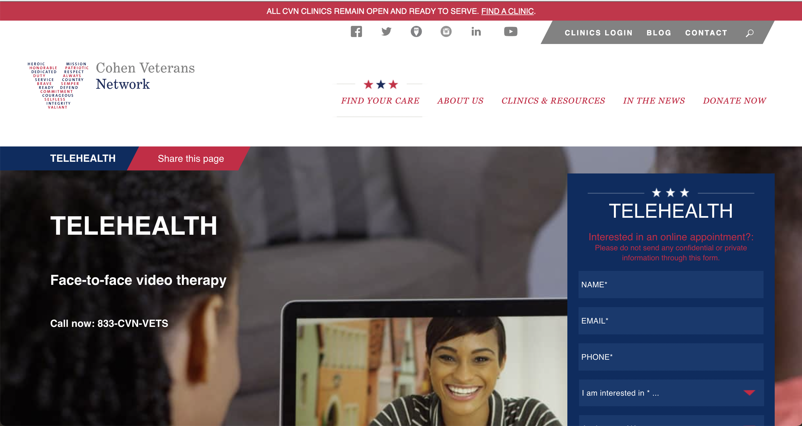

We can move in the direction of ignorance towards those who serve the country through volunteering or, in authoritarian governments, through lack of choice and robbing them of the opportunity to live a good life after their term in the army. Alternatively, perhaps we can help them through the increased budget going to health programs to ensure that the mental therapies and services are included, as returning soldiers should not face the mental suffering they adopted while fighting.
E-Home Military provides online video counseling for veterans, that include examinations on themes as marriage and family counseling; a specific, state of the art PTSD treatment program; and, addiction care. Call 800-650-0394 to schedule an appointment or visit a website to get more information.

This service offers face-to-face video therapy that allows veterans to have appointments in real time through confidential video conferencing. To see if CVN Telehealth is right for you, call 833-CVN-VETS or fill out an online form.